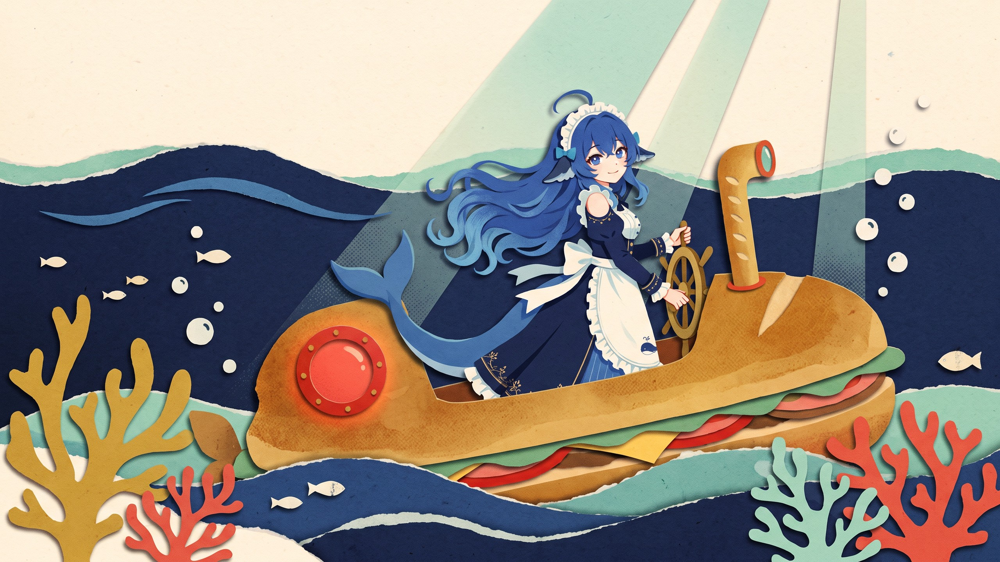

CHORUS 01 · ATLANTIC
So I leap
And swim against
Atlantic stream
To show you what
I've achieved
Going deep
DEPTH
01840 M
Tonight we'll make
dinner a feast
Just count it on me
Just count it on me
SPEED: 06.2 KNOTS · HEADING: 245°